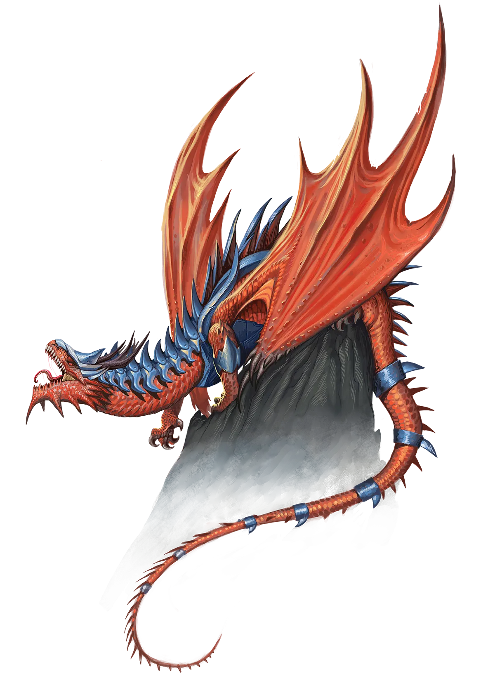
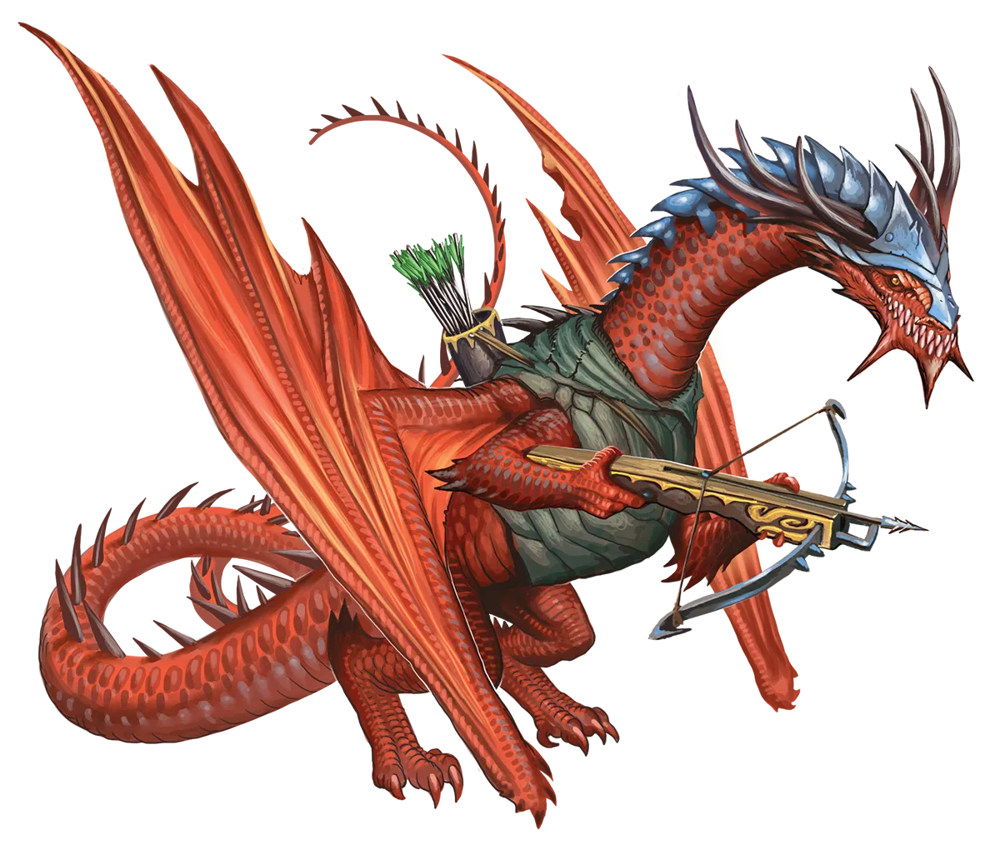

夸耀头衔
红龙的傲慢使它们喜欢根据自身事迹为自己创造头衔，永恒红龙尤甚，它们往往以更快的速度积累惊人壮举。它们不会用最令人印象深刻的头衔来取代旧有头衔，而是通常将所有这些头衔串联在一起。这让它们听起来荒谬可笑。
红龙 Red Dragon |
|
|
红龙的绝对力量唯有其惊人的自负可以匹敌。因此，红龙之中既有众多愿意执行永恒之光仪式的成员，也有更多因过于骄傲而拒绝以当前力量换取未来回报的成员。大多数传统派红龙轻视永恒者，认为只有弱者或走投无路者才会诉诸此类魔法来增强力量。但在这些虚张声势之下，是那些畏惧仪式参与者潜力的红龙，它们常常设法在其潜力实现之前将其扼杀。 在广袤大地上，红龙们一如既往地解决这场争论，他们搁置言语，让战斗来决定谁必须臣服。在这些冲突中，传统派红龙依赖飞行等会被永恒之光仪式削弱的属性，来嘲讽对手犯下战术错误。然而，永恒者通常有足够的底牌来拉平战局。即使他们今天无法赢得战斗，他们也有一张终极王牌――能够重返战场，不断变强，而传统派红龙则停滞不前。除非他们打算立即结束对手的生命，否则明智的传统派红龙在永恒者面前会谨慎地保持批评，以免轻率的侮辱或失败的挑战在未来反噬自身。 大多数永恒红龙相信永恒之光仪式必定是由红龙创造的。在他们看来，这合乎逻辑：永恒之光将力量与光明相连，而光明又与火焰相连。还有哪种生物比红龙与火焰的联系更为紧密呢？永恒红龙往往与其他永恒者相处融洽――即便是那些传统上被视为敌人的存在――只要它们的自尊得到适当满足。红龙冒险者甚至能与其他种族合作，尽管它们通常坚持在队伍中担任领导角色。无论同伴中是否有人是团队的实际领袖，对龙来说都无关紧要。在它看来，一个显赫的头衔往往比真正领导的重担更令人向往。 通常，冒险队伍中的红龙愿意接受财宝的公平分配，不要求特殊补偿。然而，许多队伍发现最好让红龙优先挑选战利品。龙会记住对它表现出的尊重，并在未来提出请求时更加通情达理。一条被剥夺了心仪之物的红龙很可能会变得暴躁易怒，甚至可能对整个队伍构成危害。 红龙在它们选择追求的任何职业中都能表现出色，但它们通常倾向于那些能展现身体优势或能凭借天生魅力震慑他人的职业。因此，红龙常常成为野蛮人、战士、圣武士或术士。 夸耀头衔 红龙的傲慢使它们喜欢根据自身事迹为自己创造头衔，永恒红龙尤甚，它们往往以更快的速度积累惊人壮举。它们不会用最令人印象深刻的头衔来取代旧有头衔，而是通常将所有这些头衔串联在一起。这让它们听起来荒谬可笑。 红龙特质 Red Dragon Traits 你出身于一脉骄傲自负、崇尚以武力征服一切的红龙世系。 |
  |